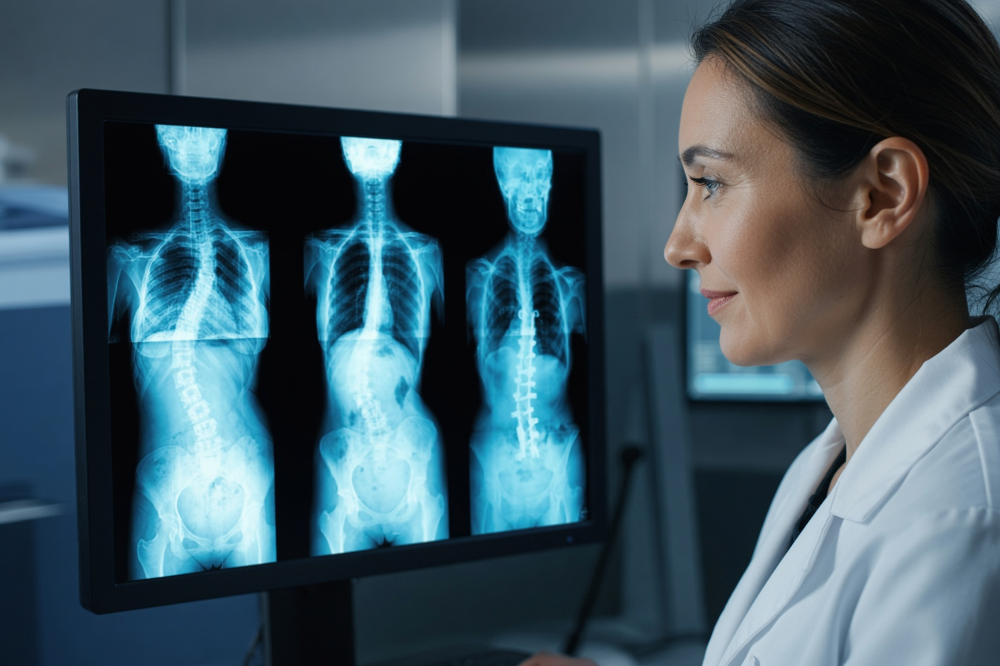

Präzise Diagnostik des Bewegungsapparates — Gelenke, Wirbelsäule, Muskeln, Sehnen, Bänder und Knochen. Mit MRT, CT, Ultraschall und bildgestützten Interventionen.
Precise diagnostics of the musculoskeletal system — joints, spine, muscles, tendons, ligaments and bones. With MRI, CT, ultrasound and image-guided interventions.
Die muskuloskelettale Radiologie ist eines der grössten und vielseitigsten Gebiete der bildgebenden Diagnostik. Sie umfasst alle Erkrankungen und Verletzungen des Bewegungsapparates — von der Wirbelsäule über alle grossen und kleinen Gelenke bis hin zu Muskeln, Sehnen, Bändern und Knochen.
Musculoskeletal radiology is one of the largest and most versatile fields of diagnostic imaging. It covers all diseases and injuries of the musculoskeletal system — from the spine through all major and minor joints to muscles, tendons, ligaments and bones.
Dank modernster Bildgebungsverfahren können wir selbst kleinste Strukturen hochpräzise darstellen — ohne Operation, ohne langen Krankenhausaufenthalt. Das MRT ist dabei die Methode der Wahl für Weichteile, der Ultraschall für dynamische Untersuchungen, und die CT für knöcherne Strukturen.
Thanks to state-of-the-art imaging techniques, we can depict even the smallest structures with high precision — without surgery, without a long hospital stay. MRI is the method of choice for soft tissues, ultrasound for dynamic examinations, and CT for bony structures.
Weichteile, Knorpel, Bänder, Menisken, Sehnen, Knochenmark
Soft tissues, cartilage, ligaments, menisci, tendons, bone marrow
Knochen, Frakturen, Gelenke, präoperative Planung
Bones, fractures, joints, preoperative planning
Sehnen, Muskeln, Bursae, dynamische Untersuchungen
Tendons, muscles, bursae, dynamic examinations
Bildgestützte Gelenkinfiltrationen, Arthrographien
Image-guided joint injections, arthrography
Vom Sportverletzung bis zur degenerativen Gelenkerkrankung — unser Spektrum ist umfassend.
From sports injury to degenerative joint disease — our spectrum is comprehensive.
Arthrose (Knie, Hüfte, Schulter), rheumatoide Arthritis, Knorpelschäden, Gelenkerguss
Osteoarthritis (knee, hip, shoulder), rheumatoid arthritis, cartilage damage, joint effusion
Kreuzbandriss, Meniskusriss, Rotatorenmanschetten-Riss, Muskelfaserriss, Bänderverletzungen
Cruciate ligament tear, meniscus tear, rotator cuff tear, muscle fibre tear, ligament injuries
Bandscheibenvorfall, Spinalkanalstenose, Spondylolisthese, Wirbelkörperfraktur, Skoliose
Disc herniation, spinal stenosis, spondylolisthesis, vertebral fracture, scoliosis
Stressfrakturen, Knochentumoren, Knochenmetastasen, Osteoporose, Osteomyelitis
Stress fractures, bone tumours, bone metastases, osteoporosis, osteomyelitis
Achillessehnenriss, Patellasehne, Supraspinatussehne, Epicondylitis, Tendinose
Achilles tendon rupture, patellar tendon, supraspinatus tendon, epicondylitis, tendinosis
Lipome, Ganglien, maligne Weichteiltumoren, Lymphknoten, intramuskuläre Hämatome
Lipomas, ganglia, malignant soft tissue tumours, lymph nodes, intramuscular haematomas
Für Gelenkbeschwerden ist das MRT meist die erste Wahl, da es Knorpel, Bänder, Menisken und andere Weichteilstrukturen ohne Strahlung hervorragend darstellt. Bei Verdacht auf knöcherne Verletzungen kann die CT wichtige Zusatzinformationen liefern. Für entzündliche Veränderungen an Sehnen und Muskeln eignet sich der Ultraschall besonders gut. Unser Radiologenteam wählt gemeinsam mit Ihrem zuweisenden Arzt die optimale Methode.
For joint problems, MRI is usually the first choice, as it excellently depicts cartilage, ligaments, menisci and other soft tissue structures without radiation. CT can provide important additional information when bony injuries are suspected. Ultrasound is particularly well suited for inflammatory changes in tendons and muscles. Our radiology team, together with your referring doctor, will select the optimal method.
Ja, absolut. Eine MRT-Untersuchung ist vollständig nicht-invasiv — es gibt keine Injektionen, keine Schnitte, keine Nachwirkungen. Sie können direkt nach der Untersuchung wieder Ihren normalen Aktivitäten nachgehen. Lediglich bei einer MRT-Arthrographie (mit Kontrastmittelinjektion in das Gelenk) wird empfohlen, das Gelenk für einige Stunden zu schonen.
Yes, absolutely. An MRI examination is completely non-invasive — no injections, no incisions, no after-effects. You can immediately resume your normal activities after the examination. Only with MRI arthrography (with contrast medium injection into the joint) is it recommended to rest the joint for a few hours.
Unser erfahrenes Radiologenteam erstellt Ihren Befund in der Regel innerhalb von 24–48 Stunden. In dringenden Fällen (z.B. bei Verdacht auf eine schwere Verletzung) kann ein Befund auch schneller ausgestellt werden. Der Befund wird direkt an Ihren zuweisenden Arzt übermittelt und steht auch Ihnen zur Verfügung.
Our experienced radiology team typically produces your report within 24–48 hours. In urgent cases (e.g. suspected serious injury), a report can also be issued more quickly. The report is sent directly to your referring doctor and is also available to you.
Vereinbaren Sie jetzt Ihren Termin — wir klären ab, was Sie brauchen.
Book your appointment now — we'll find out what you need.